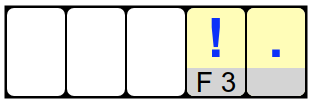

الحل
نبدأ بالبطاقة الأولى ، البطاقة الموجودة في المربع A1 . على هذه البطاقة مكتوب C2 . لذلك نضع البطاقة في الموضع الثاني في المربع C2 . على هذه البطاقة الأخيرة مكتوبة B3 . لذلك ، نضع البطاقة في الموضع الثالث في المربع B3 . نستمر بهذه الطريقة حتى آخر بطاقة ، المربع E3 ، الذي ينهي الكلمة.
نبدأ من نهاية الكلمة. نضع البطاقة في المربع F3 . ثم ضع بطاقة في الموضع قبل الأخير مكتوب عليها F3 . هناك بطاقة واحدة فقط ، وهي البطاقة الموجودة في المربع E1 .

نواصل مثل هذه الخطوة خطوة. نحن نبحث عن البطاقة المكتوبة عليها E1 . هذا هو المربع الموجود على بطاقة B2 . نحن نضعها في المركز الثالث بدءًا من النهاية. ثم نبحث عن البطاقة المكتوبة عليها B2 . هذا هو المربع الموجود على بطاقة D2 . نضعها ، ثم نبحث عن البطاقة المكتوبة عليها D2 . نحن نضعها ، وقد انتهت الكلمة.
نبدأ من نهاية الكلمة. نضع البطاقة في المربع C6 ، الذي ينهي الكلمة ، ثم نحاول العودة ، مع مراعاة جميع الحالات عندما يكون هناك العديد من الاحتمالات.
نحن نبحث عن بطاقة مكتوب عليها C6 . هناك نوعان: البطاقة في المربع A2 ، والأخرى في المربع A5 . لاحظ هذين الاحتمالين لنهاية الكلمة.

ثم نبحث عن بطاقة مكتوب عليها A2 . مرة أخرى ، هناك نوعان: البطاقة في المربع B3 ، والبطاقة في المربع C4 . نحن نبحث أيضًا عن بطاقة مكتوب عليها A5 . هناك بطاقة واحدة فقط ، وهي البطاقة الموجودة في المربع C2 .

ثم نبحث عن إمكانات الرسالة السابقة في كلمة المرور. يوجد بطاقتان مكتوب عليهما B3 ، وهما البطاقات في المربعات A1 و C5 . هناك بطاقة واحدة فقط مكتوبة عليها C4 ، وهي بطاقة المربع A3 . وهناك بطاقة واحدة فقط مكتوب عليها C2 ، وهي البطاقة الموجودة في المربع C1 .

يبقى وضع آخر بطاقة. نبحث أولاً عن بطاقة مكتوب عليها A1 . ولكن لا يوجد شيء. نستنتج أنه لا توجد كلمة مرور بما في ذلك الحرف A1 ، حتى نتمكن من إسقاط أول الاحتمالات الأربعة المذكورة أعلاه.
من ناحية أخرى ، لكل واحدة من الاحتمالات الثلاثة الأخرى ، هناك بطاقة واحدة مناسبة تمامًا. وبالتالي نحصل على الحل التالي.
المعلوماتية
تم تجهيز الكمبيوتر بذاكرة ، تم تنظيمها كتقريب أولي مثل الشبكة الكبيرة. للعثور على المعلومات المخزنة في مربع معين ، يجب عليك تقديم إحداثيات هذا المربع. تقوم بعض صناديق الذاكرة بتخزين المعلومات ، مثل الأرقام أو الحروف ، والتي تكون منطقية للمستخدم. ولكن هناك أيضا صناديق الذاكرة التي تخزن إحداثيات صناديق الذاكرة الأخرى. في علوم الكمبيوتر ، نسمي المؤشر بمحتوى هذه المربعات. تلعب المؤشرات دورًا أساسيًا للغاية في تنظيم كميات كبيرة من البيانات في الذاكرة.